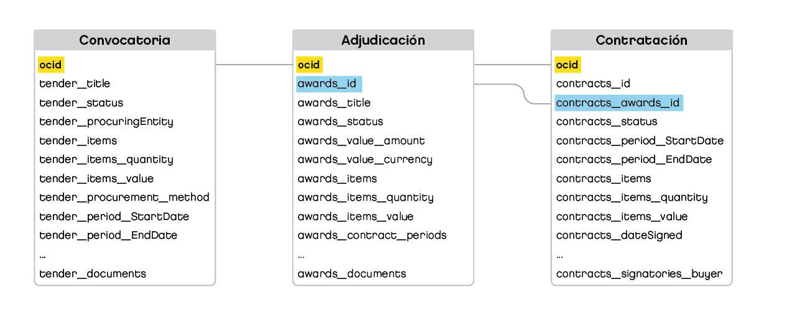

Política de publicación
La política de datos abiertos del Gobierno de la Ciudad de Buenos Aires tiene sus inicios en 2012 con el lanzamiento del portal data.buenosaires.gob.ar, el cual al día de hoy ya concentra más de 1000 recursos disponibles en formato abierto. Hace más de una década que la Ciudad cuenta con el sistema de compras y contrataciones públicas llamado BAC (Buenos Aires Compras), el cual garantiza transparencia y celeridad en los procesos. Si bien desde sus inicios el sistema contaba con un portal para consultar información acerca de los procesos de compra, la misma no se encontraba en formato abierto lo cual obstaculizaba su reutilización. Desde principios del año 2018 el Gobierno de la Ciudad de Buenos Aires comenzó a trabajar en la publicación de la información del sistema de compras y contrataciones públicas BAC (Buenos Aires Compras) en formato abierto. Con este trabajo, se pone a disposición de la ciudadanía, el acceso a información sobre las contrataciones públicas que le permite saber cómo se gestionan las mismas. La disponibilidad de estos datos fue un salto cualitativo fundamental, garantizando el derecho a la información, fortaleciendo la transparencia de los actos de gobierno.
El procedimiento de compras y contrataciones que se realiza en la ciudad, se instrumenta a través del Sistema de Registro Informatizado de Contrataciones en el ámbito del Ministerio de Hacienda de la Ciudad de Buenos Aires. Regulada por la Ley N° 2.095, Ley de Compras y Contrataciones de la Ciudad de Buenos Aires y su decreto reglamentario.
La adopción del Estándar de Datos para las Contrataciones Abiertas (OCDS por sus siglas en inglés) fue un desafío para el Gobierno de la Ciudad que implicó la revisión de sus procesos actuales y traducción de los mismos al estándar dispuesto por Open Contracting Partnership. Con este trabajo, se contribuyó a la política de transparencia e integridad pública que se lleva adelante y de esta forma, inspirar a otras ciudades a encarar procesos similares.
La publicación de las compras y contrataciones en formato abierto y con el estándar de Contrataciones Abiertas fue gracias al trabajo en conjunto entre el Ministerio de Economía y Finanzas y Secretaría General y Relaciones Internacionales del Gobierno de la Ciudad de Buenos Aires.
Propósito de la publicación
El Estándar de Datos para las Contrataciones Abiertas (OCDS) es una estándar global de datos que promueve la divulgación de datos y documentos en todas las etapas del proceso de contratación. Este estándar ha sido desarrollado para que los proveedores de información compartan datos estructurados, estandarizados y reutilizables.
La publicación de los datos de contratación, se encuentran disponibles data.buenosaires.gob.ar y tiene como objetivo garantizar que toda la información que se produce en las compras y contrataciones públicas de bienes y servicios en la ciudad estén disponibles en línea y en formatos abiertos.
La importancia de la adaptación a este estándar radica en:
- Mejorar la calidad de los datasets publicados.
- Mejorar la capacidad de comprensión de los datasets utilizados.
- Impulsar la adopción de estándares para la apertura de datos.
- Impulsar la reutilización de los datos abiertos.
- Promover la toma de decisiones basadas en evidencia.
- Mejorar la competitividad entre los proveedores de gobierno.
- Reducir los costos y optimizar la relación precio calidad que enfrentan las áreas de gobierno.
Creación de Datasets OCDS
La Dirección General de Compras y Contrataciones dependiente del Ministerio de Economía y Finanzas de la Ciudad de Buenos Aires realiza la instrumentación de los procedimientos para la tramitación de compras o contrataciones, cualquiera sea su modalidad o naturaleza, interviniendo en todas las instancias del trámite administrativo que se derivan de la acción de contratar, regulado por la Ley de Compras y Contrataciones de la Ciudad de Buenos Aires y su decreto reglamentario.
La Dirección General de Calidad Institucional y Gobierno Abierto posee el permiso para la extracción completa de la base de datos de Buenos Aires Compras (BAC) que incluyen las tres etapas del proceso de compras y contrataciones, las modalidades de contratación y los procedimientos de selección, descriptos precedentemente.
Las modalidades de contratación se encuentran detalladas como prefijo en los valores de campo contracts/0/id.
-
SPR- para los contratos con modalidad Orden de Compra Abierta
-
OCC- para los contratos con modalidad Orden de Compra Cerrada
-
CM- para los contratos con modalidad Convenio Marco
Los procedimientos de selección de los proveedores se encuentran detallados en el campo procurementMethod y procurementMethodDetails de la etapa “tender”.
Esta información es proporcionada a través de un archivo CSV con datos estructurados y la conversión a OCDS se realiza a través de un script de python. La publicación de datos de compras de bienes o servicios bajo el estándar propuesto están disponibles en formato CSV y JSON. Su actualización se realiza con una frecuencia de 15 días corridos.
Recursos del dataset
La información del sistema de compras y contrataciones se encuentra publicada en el dataset Buenos Aires Compras
Buenos Aires Compras
Archivo con formato JSON (JavaScript Object Notation) que contiene la información de todos los procesos de compras publicados en sus diferentes etapas (convocatoria, adjudicación, contratación, participantes). Para cada proceso de compra se asigna un OCID (Open Contracting Identifier), al cual se asocia toda la información referida a las etapas por las que pasa el proceso.
Muestra de la estructura del JSON
Cada uno de los procesos de compras publicados se organizan replicando la siguiente estructura. El campo OCID es el identificador único para cada proceso de compras.
"uri": "http://data.buenosaires.gob.ar/dataset/buenos-aires-compras",
"publisher": {
"name": "Gobierno de la Ciudad de Buenos Aires"
},
"publishedDate": "2019-08-06T09:30:00Z",
"license": "https://creativecommons.org/licenses/by/2.5/ar/",
"publicationPolicy": "https://github.com/datosgcba/BAC_OCDS",
"version": "1.1",
"extensions": [
"https://raw.githubusercontent.com/open-contracting-extensions/ocds_contract_signatories_extension/master/extension.json"
],
"releases": [
{
"ocid",
"id",
"awards": [
{
"id",
"documents",
"items",
"title",
"description",
"status",
"value",
"contractPeriod",
"contracts": [
{
"id",
"items",
"signatories",
"awardID",
"title",
"description",
"status",
"period",
"value",
"dateSigned",
"parties": [
{
"name",
"id",
"identifier",
"roles",
"address",
"contactPoint"
"name",
"id",
"identifier",
"roles",
"date": ,
"initiationType",
"tag",
"tender": {
"id",
"title",
"description",
"status",
"procuringEntity":,
"value",
"procurementMethod",
"procurementMethodDetails",
"additionalProcurementCategories",
"tenderPeriod",
"enquiryPeriod",
"documents",
"items",
"language": "es"
}
Convocatoria
Archivo con formato CSV (comma-separated values) con la información de la convocatoria a participantes para todos los procesos de compras y contrataciones gestionados a través del BAC. Contiene el detalle de los pliegos de bases y condiciones (fechas, montos, organizaciones), los documentos web donde se publica la información y el detalle de los ítems que se van a contratar.
Diccionario de campos
| sección | ruta | título | descripción | tipo |
| Convocatoria | tender/title | Título de la licitación | Un título para esta licitación. Éste se usará por aplicaciones como una cabecera para atraer interés y ayudar a los analistas a entender la naturaleza de esta contratación. | string |
| Convocatoria | tender/description | Descripción de la licitación | A summary description of the tender. This should complement structured information provided using the items array. Descriptions should be short and easy to read. Avoid using ALL CAPS. | string |
| Convocatoria | tender/status | Estado de la licitación | El estado actual de la licitación basado en la lista de códigos tenderStatus | string |
| Convocatoria | tender/procuringEntity | Entidad contratante | La entidad que gestiona el proceso de contratación. Esta puede ser distinta del comprador que paga/usa los artículos adquiridos. | object |
| Convocatoria | tender/procuringEntity/name | Nombre de la Organización | El nombre de la parte involucrada al que se hace referencia. Este debe de ser igual al nombre de una entrada en la sección de participantes | string |
| Convocatoria | tender/procuringEntity/id | ID de Organización | El id de una parte involucrada a la que se hace referencia. Este debe de ser igual al id de una entrada en la sección de partes involucradas. | string, integer |
| Convocatoria | tender/items | Artículos que se adquirirán | Los bienes y servicios que se comprarán, divididos en tipos de artículos o ítems de una clasificación preexistente cuando sea posible. Los artículos no deben de duplicarse, en su lugar se debe especificar una cantidad de 2. | array |
| Convocatoria | tender/items/id | ID | Un identificador local al cual hacer referencia y con el cual unir los artículos. Debe de ser único en relación a los demás ítems del mismo proceso de contratación presentes en la matriz de artículos. | string, integer |
| Convocatoria | tender/items/description | Descripción | Una descripción de los bienes o servicios objetos del procedimiento de contratación. | string |
| Convocatoria | tender/items/classification | Clasificación | La clasificación primaria para el artículo. Vea el itemClassificationScheme para identificar listas de clasificación preferidas, incluyendo CPV y GSIN. | object |
| Convocatoria | tender/items/classification | Clasificación | Una clasificación consta de al menos dos partes: un identificador para la lista (esquema) de la cual se extrae la clasificación, y un identificador para la categoría de esa lista que se aplica. También es útil publicar una etiqueta de texto y / o un URI que los usuarios puedan usar para interpretar la clasificación. | object |
| Convocatoria | tender/items/classification/scheme | Esquema | Una clasificación debe tomarse de un esquema o lista de códigos existente. Este campo se usa para indicar el esquema/lista de códigos de la cual se toma la clasificación. Para artículos o ítems de una clasificación preexistente, este valor debe representar un Esquema de Clasificación de Artículos conocido cuando sea posible. | string |
| Convocatoria | tender/items/classification/id | ID | El código de clasificación tomado de un esquema seleccionado. | string, integer |
| Convocatoria | tender/items/quantity | Cantidad | El número de unidades requerido | number |
| Convocatoria | tender/items/unit | Unidad | A description of the unit in which the supplies, services or works are provided (e.g. hours, kilograms) and the unit-price. For comparability, an established list of units can be used. | object |
| Convocatoria | tender/items/unit/scheme | Esquema | La lista de la cual se toman los identificadores de unidades de medida. Esta debe ser una entrada tomada de las opciones disponibles en la lista de códigos unitClassificationScheme. Se recomienda el uso del esquema "UNCEFACT" para la Recomendación 20 del CEFACT-ONU. Se recomienda la lista de "Códigos para unidades de medida utilizadas en el comercio internacional", aunque se dispone de otras opciones. | string |
| Convocatoria | tender/items/unit/name | Nombre | Nombre de la unidad. | string |
| Convocatoria | tender/items/unit/value | Valor | El valor monetario de una unidad. | object |
| Convocatoria | tender/items/unit/value | Valor | Los valores financieros siempre deben de publicarse emparejados con una moneda. | object |
| Convocatoria | tender/items/unit/value/amount | Monto | Monto como una cifra. | number |
| Convocatoria | tender/items/unit/value/currency | Moneda | La moneda para cada monto siempre debe de especificarse usando en mayúsculas el código de moneda de 3 letras del ISO4217. | string |
| Convocatoria | tender/value | Valor | El valor máximo estimado de la contratación. Un valor negativo indica que el proceso de contratación puede incluir pagos del proveedor al comprador (usado comúnmente en contratos de concesión). | object |
| Convocatoria | tender/value | Valor | Los valores financieros siempre deben de publicarse emparejados con una moneda. | object |
| Convocatoria | tender/value/amount | Monto | Monto como una cifra. | number |
| Convocatoria | tender/value/currency | Moneda | La moneda para cada monto siempre debe de especificarse usando en mayúsculas el código de moneda de 3 letras del ISO4217. | string |
| Convocatoria | tender/procurementMethod | Método de contratación | Especifica el método de licitación usando la lista de códigos de método. Esta es una lista de códigos cerrada. Los tipos de método locales deben de mapearse con esta lista. | string |
| Convocatoria | tender/procurementMethodDetails | Detalles del método de contratación | Detalles adicionales sobre el método de licitación utilizado. Este campo puede usarse para proveer el nombre local del método de licitación utilizado en particular. | string |
| Convocatoria | tender/additionalProcurementCategories | Categorías adicionales de contratación | Cualquier categoría adicional que describe los objetos de este proceso de contratación, de la lista de códigos extendedProcurementCategory. Esta es una lista abierta. Se pueden incluir categorías locales en esta lista. | array |
| Convocatoria | tender/tenderPeriod | Periodo de licitación | El periodo cuando la licitación está abierta para la recepción de las propuestas. La fecha de final es la fecha de cierre de recepción de las propuestas. | object |
| Convocatoria | tender/tenderPeriod | Periodo | Los eventos clave durante un proceso de contratación pueden tener una fecha de inicio, una fecha de finalización, una duración o un alcance máximo conocidos (la última fecha a la que se puede extender el período). En algunos casos, no todos estos campos tendrán valores conocidos o relevantes. | object |
| Convocatoria | tender/tenderPeriod/startDate | Fecha de inicio | La fecha de inicio del periodo. Cuando se conozca, se debe de proveer una fecha precisa de inicio. | string |
| Convocatoria | tender/tenderPeriod/endDate | Fecha de fin | La fecha de fin del periodo. Cuando se conozca, se debe de proveer siempre una fecha de terminación. | string |
| Convocatoria | tender/tenderPeriod/durationInDays | Duración (días) | La duración máxima de este periodo en días. Una interfaz de usuario puede querer obtener o mostrar estos datos en meses o años, pero debe convertirla en días cuando se complete este campo. El campo puede usarse cuando no se conozcan fechas exactas. Cuando se provean un startDate y endDate, este campo es opcional y debe de reflejar la diferencia entre esos dos días. Cuando se provea un startDate y maxExtentDate, este campo es opcional y debe de reflejar la diferencia entre startDate y maxExtentDate. | integer |
| Convocatoria | tender/enquiryPeriod | Periodo de consulta | El periodo durante el cual los postulantes potenciales pueden hacer preguntas o solicitudes de aclaración a la entidad que gestiona el proceso de contratación. Los detalles de cómo enviar solicitudes deben especificarse en documentos de notificaciones adjuntos o en el campo submissionMethodDetails. Las fechas estructuradas para cuando se dará respuesta a las preguntas se puede proveer usando hitos de la licitación. | object |
| Convocatoria | tender/enquiryPeriod | Periodo | Los eventos clave durante un proceso de contratación pueden tener una fecha de inicio, una fecha de finalización, una duración o un alcance máximo conocidos (la última fecha a la que se puede extender el período). En algunos casos, no todos estos campos tendrán valores conocidos o relevantes. | object |
| Convocatoria | tender/enquiryPeriod/startDate | Fecha de inicio | La fecha de inicio del periodo. Cuando se conozca, se debe de proveer una fecha precisa de inicio. | string |
| Convocatoria | tender/enquiryPeriod/endDate | Fecha de fin | La fecha de fin del periodo. Cuando se conozca, se debe de proveer siempre una fecha de terminación. | string |
| Convocatoria | tender/enquiryPeriod/durationInDays | Duración (días) | La duración máxima de este periodo en días. Una interfaz de usuario puede querer obtener o mostrar estos datos en meses o años, pero debe convertirla en días cuando se complete este campo. El campo puede usarse cuando no se conozcan fechas exactas. Cuando se provean un startDate y endDate, este campo es opcional y debe de reflejar la diferencia entre esos dos días. Cuando se provea un startDate y maxExtentDate, este campo es opcional y debe de reflejar la diferencia entre startDate y maxExtentDate. | integer |
| Convocatoria | tender/documents | Documentos | Todos los documentos y adjuntos relacionados con la licitación, incluyendo cualquier aviso o notificación. Ver la lista de códigos documentType para más detalles sobre documentos que se pueden incluir. Los documentos comunes son avisos legales de licitación, especificaciones técnicas, criterios de evaluación y, conforme avance la licitación, aclaraciones y respuestas a las solicitudes de información. | array |
| Convocatoria | tender/documents/id | ID | Identificador local y único para este documento. Este campo se utiliza para darle seguimiento a las múltiples versiones de un documento en el proceso de creación de un registro del proceso de contratación (record) que se genera a partir de las entregas (release). | string, integer |
| Convocatoria | tender/documents/documentType | Tipo de Documento | Una clasificación del documento descrito tomada de la lista de códigos documentType. Los valores de la lista de códigos proporcionados deben usarse siempre que sea posible, aunque se pueden proporcionar valores extendidos si la lista de códigos no tiene un código relevante. | string |
| Convocatoria | tender/documents/url | URL | direct link to the document or attachment. The server providing access to this document should be configured to correctly report the document mime type. | string |
| Convocatoria | tender/documents/datePublished | Fecha de publicación | La fecha de publicación del documento. Esto es particularmente importante para documentos relevantes desde el punto de vista legal, como los avisos de licitación. | string |
| Convocatoria | tender/documents/language | Idioma | Especifica el idioma del documento referenciado usando etiquetas de idioma de dos dígitos ISO639-1 ó BCP47 extendida. Se recomienda fuertemente el uso de códigos en minúsculas del ISO639-1. | string |
Adjudicación
Archivo con formato CSV con la información de la adjudicación de los procesos de compras. Incorpora el detalle de los documentos publicados luego de la adjudicación y los ítems adjudicados.
Diccionario de campos
| sección | ruta | título | descripción | tipo |
| Adjudicación | awards/id | ID de Adjudicación | El identificador de esta adjudicación. Debe de ser único y no puede cambiar dentro del Proceso de Contratación Abierta del que es parte (definido por un sólo ocid). Ver la guía de identificadores para más detalles. | string, integer |
| Adjudicación | awards/title | Título | Título de la adjudicación | string |
| Adjudicación | awards/description | Descripción | Descripción de la adjudicación | string |
| Adjudicación | awards/status | Estado de la Adjudicación | El estado actual de la adjudicación tomado de la lista de códigos awardStatus | string |
| Adjudicación | awards/value | Valor | El valor o monto total de esta adjudicación. En el caso de un contracto marco este puede ser el estimado del valor total o valor máximo del acuerdo. Puede haber más de una adjudicación por proceso de contratación. Un valor negativo indica que la adjudicación puede implicar pagos del proveedor al comprador (comúnmente utilizado en contratos de concesiones). | object |
| Adjudicación | awards/value | Valor | Los valores financieros siempre deben de publicarse emparejados con una moneda. | object |
| Adjudicación | awards/value/amount | Monto | Monto como una cifra. | number |
| Adjudicación | awards/value/currency | Moneda | La moneda para cada monto siempre debe de especificarse usando en mayúsculas el código de moneda de 3 letras del ISO4217. | string |
| Adjudicación | awards/items | Artículos Adjudicados | Los bienes y servicios adjudicados, desglosados en tipos de artículos de una clasificación preexistente cuando sea posible. Los artículos no deben de estar duplicados, sino se debe especificar la cantidad. | array |
| Adjudicación | awards/items/id | ID | Un identificador local al cual hacer referencia y con el cual unir los artículos. Debe de ser único en relación a los demás ítems del mismo proceso de contratación presentes en la matriz de artículos. | string, integer |
| Adjudicación | awards/items/description | Descripción | Una descripción de los bienes o servicios objetos del procedimiento de contratación. | string |
| Adjudicación | awards/items/classification | Clasificación | La clasificación primaria para el artículo. Vea el itemClassificationScheme para identificar listas de clasificación preferidas, incluyendo CPV y GSIN. | object |
| Adjudicación | awards/items/classification | Clasificación | Una clasificación consta de al menos dos partes: un identificador para la lista (esquema) de la cual se extrae la clasificación, y un identificador para la categoría de esa lista que se aplica. También es útil publicar una etiqueta de texto y / o un URI que los usuarios puedan usar para interpretar la clasificación. | object |
| Adjudicación | awards/items/classification/scheme | Esquema | Una clasificación debe tomarse de un esquema o lista de códigos existente. Este campo se usa para indicar el esquema/lista de códigos de la cual se toma la clasificación. Para artículos o ítems de una clasificación preexistente, este valor debe representar un Esquema de Clasificación de Artículos conocido cuando sea posible. | string |
| Adjudicación | awards/items/classification/id | ID | El código de clasificación tomado de un esquema seleccionado. | string, integer |
| Adjudicación | awards/items/quantity | Cantidad | El número de unidades requerido | number |
| Adjudicación | awards/items/unit | Unidad | A description of the unit in which the supplies, services or works are provided (e.g. hours, kilograms) and the unit-price. For comparability, an established list of units can be used. | object |
| Adjudicación | awards/items/unit/scheme | Esquema | La lista de la cual se toman los identificadores de unidades de medida. Esta debe ser una entrada tomada de las opciones disponibles en la lista de códigos unitClassificationScheme. Se recomienda el uso del esquema "UNCEFACT" para la Recomendación 20 del CEFACT-ONU. Se recomienda la lista de "Códigos para unidades de medida utilizadas en el comercio internacional", aunque se dispone de otras opciones. | string |
| Adjudicación | awards/items/unit/name | Nombre | Nombre de la unidad. | string |
| Adjudicación | awards/items/unit/value | Valor | El valor monetario de una unidad. | object |
| Adjudicación | awards/items/unit/value | Valor | Los valores financieros siempre deben de publicarse emparejados con una moneda. | object |
| Adjudicación | awards/items/unit/value/amount | Monto | Monto como una cifra. | number |
| Adjudicación | awards/items/unit/value/currency | Moneda | La moneda para cada monto siempre debe de especificarse usando en mayúsculas el código de moneda de 3 letras del ISO4217. | string |
| Adjudicación | awards/contractPeriod | Periodo de contrato | El periodo por el cual se ha adjudicado el contrato. | object |
| Adjudicación | awards/contractPeriod | Periodo | Los eventos clave durante un proceso de contratación pueden tener una fecha de inicio, una fecha de finalización, una duración o un alcance máximo conocidos (la última fecha a la que se puede extender el período). En algunos casos, no todos estos campos tendrán valores conocidos o relevantes. | object |
| Adjudicación | awards/contractPeriod/durationInDays | Duración (días) | La duración máxima de este periodo en días. Una interfaz de usuario puede querer obtener o mostrar estos datos en meses o años, pero debe convertirla en días cuando se complete este campo. El campo puede usarse cuando no se conozcan fechas exactas. Cuando se provean un startDate y endDate, este campo es opcional y debe de reflejar la diferencia entre esos dos días. Cuando se provea un startDate y maxExtentDate, este campo es opcional y debe de reflejar la diferencia entre startDate y maxExtentDate. | integer |
| Adjudicación | awards/documents | Documentos | Todos los documentos y archivos adjuntos relacionados con la adjudicación, incluyendo cualquier aviso o notificación. | array |
| Adjudicación | awards/documents/id | ID | Identificador local y único para este documento. Este campo se utiliza para darle seguimiento a las múltiples versiones de un documento en el proceso de creación de un registro del proceso de contratación (record) que se genera a partir de las entregas (release). | string, integer |
| Adjudicación | awards/documents/documentType | Tipo de Documento | Una clasificación del documento descrito tomada de la lista de códigos documentType. Los valores de la lista de códigos proporcionados deben usarse siempre que sea posible, aunque se pueden proporcionar valores extendidos si la lista de códigos no tiene un código relevante. | string |
| Adjudicación | awards/documents/url | URL | direct link to the document or attachment. The server providing access to this document should be configured to correctly report the document mime type. | string |
| Adjudicación | awards/documents/datePublished | Fecha de publicación | La fecha de publicación del documento. Esto es particularmente importante para documentos relevantes desde el punto de vista legal, como los avisos de licitación. | string |
| Adjudicación | awards/documents/language | Idioma | Especifica el idioma del documento referenciado usando etiquetas de idioma de dos dígitos ISO639-1 ó BCP47 extendida. Se recomienda fuertemente el uso de códigos en minúsculas del ISO639-1. | string |
Contratación
Archivo con formato CSV con la información de los contratos firmados por las partes participantes del proceso. Contiene el detalle de los montos efectivamente erogados por las reparticiones del GCBA, los ítems contratados, los plazos de contratación.
Diccionario de campos
| sección | ruta | título | descripción | tipo |
| Contratación | contracts/id | ID del Contrato | El identificador para este contrato. Debe de ser único y no puede cambiar durante su Proceso de Contratación Abierta (definido por un sólo ocid). Véase la guía de identificadores para más detalles. | string, integer |
| Contratación | contracts/awardID | ID de Adjudicación | El identificador de adjudicación (award.id) contra el cual se está expidiendo este contrato. | string, integer |
| Contratación | contracts/title | Título del contrato | Título del contrato | string |
| Contratación | contracts/description | Descripción del contrato | Descripción del contrato | string |
| Contratación | contracts/status | Estado del Contrato | El estado actual del contrato. Tomado de la lista de códigos de contractStatus | string |
| Contratación | contracts/period | Periodo | Las fechas de inicio y fin del contrato. | object |
| Contratación | contracts/period | Periodo | Los eventos clave durante un proceso de contratación pueden tener una fecha de inicio, una fecha de finalización, una duración o un alcance máximo conocidos (la última fecha a la que se puede extender el período). En algunos casos, no todos estos campos tendrán valores conocidos o relevantes. | object |
| Contratación | contracts/period/startDate | Fecha de inicio | La fecha de inicio del periodo. Cuando se conozca, se debe de proveer una fecha precisa de inicio. | string |
| Contratación | contracts/period/endDate | Fecha de fin | La fecha de fin del periodo. Cuando se conozca, se debe de proveer siempre una fecha de terminación. | string |
| Contratación | contracts/period/durationInDays | Duración (días) | La duración máxima de este periodo en días. Una interfaz de usuario puede querer obtener o mostrar estos datos en meses o años, pero debe convertirla en días cuando se complete este campo. El campo puede usarse cuando no se conozcan fechas exactas. Cuando se provean un startDate y endDate, este campo es opcional y debe de reflejar la diferencia entre esos dos días. Cuando se provea un startDate y maxExtentDate, este campo es opcional y debe de reflejar la diferencia entre startDate y maxExtentDate. | integer |
| Contratación | contracts/value | Valor | Un valor o monto total de este contrato. Un valor negativo indica que el contrato implicará pagos del proveedor al comprador (comúnmente usado en contratos de concesión). | object |
| Contratación | contracts/value | Valor | Los valores financieros siempre deben de publicarse emparejados con una moneda. | object |
| Contratación | contracts/value/amount | Monto | Monto como una cifra. | number |
| Contratación | contracts/value/currency | Moneda | La moneda para cada monto siempre debe de especificarse usando en mayúsculas el código de moneda de 3 letras del ISO4217. | string |
| Contratación | contracts/items | Artículos Contratados | Los bienes, servicios y cualquier resultado intangible de este contrato. Nota: No repetir si los artículos son los mismos que la adjudicación. | array |
| Contratación | contracts/items/id | ID | Un identificador local al cual hacer referencia y con el cual unir los artículos. Debe de ser único en relación a los demás ítems del mismo proceso de contratación presentes en la matriz de artículos. | string, integer |
| Contratación | contracts/items/description | Descripción | Una descripción de los bienes o servicios objetos del procedimiento de contratación. | string |
| Contratación | contracts/items/classification | Clasificación | La clasificación primaria para el artículo. Vea el itemClassificationScheme para identificar listas de clasificación preferidas, incluyendo CPV y GSIN. | object |
| Contratación | contracts/items/classification | Clasificación | Una clasificación consta de al menos dos partes: un identificador para la lista (esquema) de la cual se extrae la clasificación, y un identificador para la categoría de esa lista que se aplica. También es útil publicar una etiqueta de texto y / o un URI que los usuarios puedan usar para interpretar la clasificación. | object |
| Contratación | contracts/items/classification/scheme | Esquema | Una clasificación debe tomarse de un esquema o lista de códigos existente. Este campo se usa para indicar el esquema/lista de códigos de la cual se toma la clasificación. Para artículos o ítems de una clasificación preexistente, este valor debe representar un Esquema de Clasificación de Artículos conocido cuando sea posible. | string |
| Contratación | contracts/items/classification/id | ID | El código de clasificación tomado de un esquema seleccionado. | string, integer |
| Contratación | contracts/items/quantity | Cantidad | El número de unidades requerido | number |
| Contratación | contracts/items/unit | Unidad | El detalle de la unidad en que el bien o servicio es provisto (unidades, horas, kilogramos). | object |
| Contratación | contracts/items/unit/scheme | Esquema | La lista de la cual se toman los identificadores de unidades de medida. Esta debe ser una entrada tomada de las opciones disponibles en la lista de códigos unitClassificationScheme. Se recomienda el uso del esquema "UNCEFACT" para la Recomendación 20 del CEFACT-ONU. Se recomienda la lista de "Códigos para unidades de medida utilizadas en el comercio internacional", aunque se dispone de otras opciones. | string |
| Contratación | contracts/items/unit/name | Nombre | Nombre de la unidad. | string |
| Contratación | contracts/items/unit/value | Valor | El valor monetario de una unidad. | object |
| Contratación | contracts/items/unit/value | Valor | Los valores financieros siempre deben de publicarse emparejados con una moneda. | object |
| Contratación | contracts/items/unit/value/amount | Monto | Monto como una cifra. | number |
| Contratación | contracts/items/unit/value/currency | Moneda | La moneda para cada monto siempre debe de especificarse usando en mayúsculas el código de moneda de 3 letras del ISO4217. | string |
| Contratación | contracts/dateSigned | Fecha de firma | La fecha en que se firmó el contrato. En el caso de múltiples firmas, la fecha de la última firma. | string |
| Contratación | contracts/0/signatories | Firmantes del contrato | Detalle de las partes firmantes del contrato de provisión de bienes o servicios. Consta de una entidad contratante y otra proveedora. | string |
| Contratación | contracts/0/signatories/0/name | Nombre del firmante | Nombre de la entidad | string |
| Contratación | contracts/0/signatories/0/id | Id del firmante | Identificador de la entidad | string |
Participantes
Archivo con formato CSV que contiene el detalle de las partes participantes (proveedores, compradores, unidades de adquisiciones) de cada uno de los procesos de compras gestionados a través del BAC.
Diccionario de campos
| sección | ruta | título | descripción | tipo |
| Participantes | parties/name | Nombre común | Un nombre común para esta organización u otro participante en el proceso de contratación. El objeto "Identificador principal" provee un espacio para el nombre legal o razón social; este atributo puede repetir ese valor o puede proveer el nombre común por el cual se conoce a esta entidad u organización. Este campo también puede incluir detalles del departamento o sub unidad involucrada en este proceso de contratación. | string |
| Participantes | parties/id | ID de Entidad | El ID utilizado para hacer referencia a esta parte involucrada desde otras secciones de la entrega. Este campo puede construirse con la siguiente estructura {identifier.scheme}-{identifier.id}(-{department-identifier}). | string |
| Participantes | parties/identifier | Identificador principal | El identificador primario para esta organización o participante. Son preferibles los identificadores que denotan de forma única a una entidad legal. Consulta la guía de identificadores de organización para el esquema e identificador preferido. | object |
| Participantes | parties/identifier | Identificador | Un identificador único para una parte involucrada (organización). | object |
| Participantes | parties/identifier/scheme | Esquema | Los identificadores de organización se pueden tomar de una lista de identificadores existente. Este campo se utiliza para indicar el esquema o las listas de códigos en las que se encontrará el identificador. Este valor debe tomarse del Esquema de Identificación de Organización. | string |
| Participantes | parties/identifier/id | ID | El identificador de la organización en el esquema seleccionado. | string, integer |
| Participantes | parties/identifier/legalName | Nombre Legal | El nombre legalmente registrado de la organización. | string |
| Participantes | parties/address/streetAddress | Dirección | La dirección de la calle. Por ejemplo: 1600 Amphitheatre Pkwy. | string |
| Participantes | parties/address/locality | Localidad | La localidad. Por ejemplo: Mountain View. | string |
| Participantes | parties/address/postalCode | Código postal | El código postal. Por ejemplo: 94043 | string |
| Participantes | parties/address/countryName | País | El nombre del país. Por ejemplo: Estados Unidos. | string |
| Participantes | parties/contactPoint/name | Nombre | El nombre de la persona de contacto, departamento o punto de contacto en relación a este proceso de contratación. | string |
| Participantes | parties/contactPoint/email | Correo electrónico | La dirección de correo del punto o persona de contacto. | string |
| Participantes | parties/contactPoint/telephone | Teléfono | El número de teléfono del punto o persona de contacto. Este debe de incluir el código de marcación internacional. | string |
| Participantes | parties/identifier/uri | URI | Una URI para identificar a la organización, como los proveídos por Open Corporates o algún otro proveedor relevante de URIs. Este campo no debe ser utilizado para especificar el sitio web de la organización, el cual puede ser especificado en el campo URL del punto de contacto de la Organización. | string |
| Participantes | parties/roles | Roles de las partes | Los roles de las partes involucradas en el proceso de contratación. El o los roles deben de tomarse de la lista de códigos partyRole. Los valores provistos en la lista de códigos deben usarse cuando sea posible, aunque se pueden usar valores extendidos si la lista de códigos no tiene un código relevante. | array |
Estructura de las tablas

Alcance de los datos
Fecha: Marzo de 2011 - Actualidad
Compradores: Son las unidades ejecutoras del Gobierno de la Ciudad de Buenos Aires.Incluye las áreas de Jefatura de Gobierno, Vicejefatura, Jefatura de Gabinete de Ministros, Ministerios, Secretarías, Subsecretarías, Direcciones Generales, Unidades de proyectos especiales.
Valores:El Gobierno de la Ciudad de Buenos Aires no tiene un valor de contratación por debajo o por encima del cual se excluyan los datos de contratación.
Tipos de proceso: Orden de compra abierta, orden de compra cerrada, compra unificada, subasta inversa y convenio Marco.
Etapas: Publicamos los datos de convocatoria, licitación o concurso, adjudicación y contratos para cada proceso de contratación.
Cantidad de procesos: La cantidad de procesos publicados es creciente con el correr de los años. Esto se encuentra directamente relacionado con la extensión del uso del sistema BAC para gestionar compras y contrataciones.
Codigos, lista de códigos y extensiones utilizadas en la publicación de datos
- Códigos: Items
- Nombre de la lista: x_catalogo_bienes_servicios_BAC
-
Descripción: Listado de códigos utilizados en el sistema BAC para identificar bienes o servicios y sus respectivos modelos. Disponible aquí. Usuario: CATALOGO ; Contraseña: consulta
-
Códigos: Unidades de medida
- Nombre de la lista: x_unidades_medida_bac
-
Descripción: Unidades de medida utilizadas en el sistema BAC
-
Códigos: Unidades de medida
- Nombre de la lista: UNCEFACT
-
Descripción: Códigos de unidades de medida propuestos por Naciones Unidas para el comercio internacional.
-
Códigos: Código de identificación de proveedores
- Nombre de la lista: AR-CUIT
-
Descripción: Listado de códigos utilizados para identificar a los proveedores de bienes o servicios. Se construye en base al número de CUIT de los mismos.
-
Códigos: Código de identificación de unidades ejecutoras y unidades operativas de adquisiciones
- Nombre de la lista: CABA-UE
-
Descripción: Listado de códigos utilizados para identificar a las agencias de gobierno que participan del proceso de compras.
-
Campo: procurementMethod
- Valor OCDS: direct
-
Valor BAC: contratación menor; contratación directa
-
Campo: procurementMethod
- Valor OCDS: open
-
Valor BAC: licitación pública
-
Campo: procurementMethod
- Valor OCDS: limited
-
Valor BAC: licitación privada
-
Extensión utilizada: Signatories
- Descripción: Listado de participantes en la firma del contrato. Compradores, proveedores y entidades procuradoras
- Link a la extensión: https://github.com/open-contracting-extensions/ocds_contract_signatories_extension
Licencias
La publicación de los datos de compras y contrataciones del sistema BAC en el Estándar para las Contrataciones Abiertas (OCDS) se realiza bajo la licencia Creative Commons Legal Code Atribución 2.5 Argentina. Esto permite que los usuarios de datos realicen las siguientes acciones:
- Compartir, copiar y redistribuir material en cualquier medio o formato.
- Adaptar, remezclar, transformar y construir a partir del material para cualquier propósito, incluso comercial.
- Utilizar estos datos para cualquier propósito, incluido uso comercial y no comercial.
- Publicar contenido basado en el uso de los datos publicados.
El texto completo de la licencia, se puede encontrar en creativecommons.org/licenses/by/2.5/ar/legalcode
Aspectos legales y OCDS
El Gobierno de la Ciudad lleva adelante la política de apertura de datos desde el años 2012 con la firma del decreto 156/2012. Esto impulsó la creación de la plataforma de datos publicos data.buenosaires.gob.ar para facilitar la búsqueda, descubrimiento y acceso de los datos abiertos producidos por la ciudad.
A fines de 2015, la Ciudad firmó la Carta Internacional de Datos Abiertos a través de la cual, se compromete a seguir e implementar los lineamientos para datos públicos. Sumado, a la sanción de la Ley de Acceso a la Información Pública (Ley N° 104) implicó un avance en materia de apertura ya que establece el formato abierto como criterio fundamental.
La Dirección General de Calidad Institucional y Gobierno Abierto es el área responsable de diseñar e implementar la política de datos abiertos de la ciudad a través de data.buenosaires.gob.ar. Actualmente, aplicamos el estándar Open Contracting a través de la publicación de datos OCDS.
Responsabilidad, información de contacto y comentarios
La Dirección General de Compras y Contrataciones (DGCYC) del Ministerio de Economía y Finanzas es el responsable de producir la información de las compras y contrataciones que se registran en el sistema Buenos Aires Compras (BAC). Para entender el proceso de compras de la ciudad, la Dirección General de Compras y Contrataciones (DGCYC) pone a disposición de los empleados y proveedores del Gobierno de la Ciudad, cursos de capacitación presenciales y de forma online. Para solicitar información sobre los cursos online puede acceder al campus virtual dguiafvirtual.buenosaires.gob.ar/ o puede enviar un mail a logistica@dguiaf-gcba.gov.ar.
La Dirección General de Calidad Institucional y Gobierno Abierto (DGCIGA) es responsable de la implementación del estándar Open Contracting y de la publicación de los OCDS. Ante cualquier comentario o duda puede contactarse por mail a través de gobiernoabierto@buenosaires.gob.ar. Cuando nos envíe sus comentarios, realizaremos un análisis y seguimiento del tema planteado, posteriormente nos pondremos en contacto para informar sobre los resultados y/o acciones posteriores.
Documentación Adicional
La Ley 104 de Acceso a la Información Pública establece la obligación de los distintos sujetos obligados de publicar en sus respectivas páginas web, de manera completa y actualizada y en lo posible en formatos abiertos y reutilizables, la información relativa a contrataciones públicas.
La normativa completa que regula la compra y contratación de bienes y servicios de la ciudad, que incluye la Ley Nº 2090 y su decreto reglamentario Decreto N° 326/17, se encuentran disponibles en buenosairescompras.gob.ar/normativa.aspx.
El Pliego Único de Bases y Condiciones Generales para los procesos de compras y contrataciones mediante BAC, aprobado por Disposición Nº 396/DGCYC/14 se encuentra disponible en el portal de compras, tanto en la sección “Normativa” como en cada uno de los procesos tramitados por esa vía.